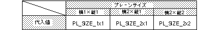

Return to previous page | Return to menu | Go to next page
oid
Scroll function
RGB plane size set (use rotation parameter B)
void slPlaneRB(type)
Uint16 type ;
type Uint16 type numerical value corresponding to the plain size
Set the plane size of the rotating scroll (use rotation parameter B).
Refer to the table below for the values assigned to the parameters.
None

Note) The values in the above table are defined in “sl_def.h” included with the system.
Reference: Chapter 8 Scroll
slPlaneRB